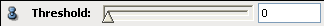
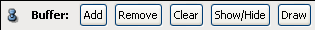

Ports
Draw Style
The draw style port is inherited from class ViewBase. For a description of this port see there.
Threshold

Buffer

To use this port, you must first create a dragger. To do so, type the command Isosurface showBox. Then the buffer port must be enabled explicitly with the command Isosurface buffer show. For a detailed description see the ViewBase documentation.
TextureWrap